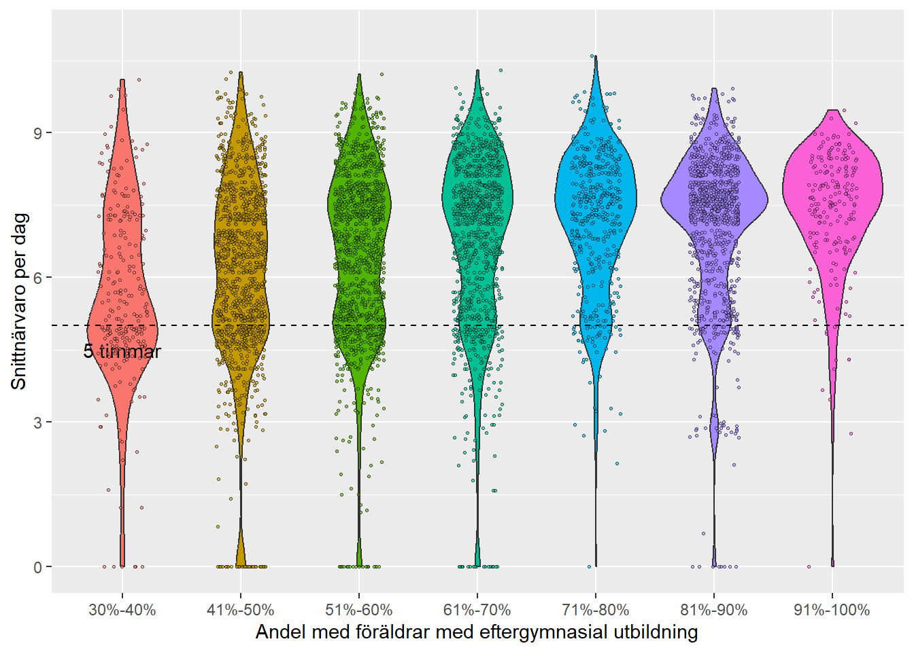
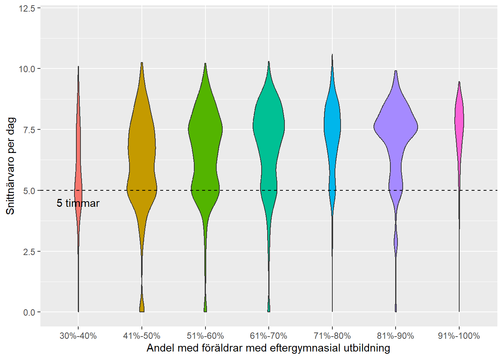

Förskoledata
Graferna nedan är en sammanfattning av närvarodata från kommunala förskolor för april 2024. Värdena är ett medel för alla dagar i april.
Figure 1 visar hur medelvärdet för antalet timmar på förskolan förhåller sig till variabeln utländsk bakgrund. Cirkelstorleken på förskolorna är mängden uppbyggand medel, i absoluta tal. Vi ser att andelen med utländsk bakgrund har en negativ påverkan på antal timmar i förskolan.
Figure 2 visar relationen mellan föräldrarnas utbildningsnivå och antal timmar i förskolan. Ökad andel föräldar med eftergymnasial utbildning har en positiv relation på antalet timmar barnen går på förskolan. Vi ser att de skolor med uppbyggande medel finns som väntat i området med lägre andel eftergymnasial utbildning, högre andel utländsk bakgrund och även lägre antal timmar per närvarande.
Figure 3 visar personaltätheten mot andel föräldrar med eftergymnasial utbildning. En mycket liten trend existerar att skolor med högre andel föräldrar med eftergymnasial utbildning har högre personaltäthet, inte orimligt med tanke på att dessa elever tenderar att gå fler timmar per barn. Trenden är dock liten och en relativt stor spridning mellan förskolor existerar.
Figure 4 och Figure 5 visar vilken tid varje förskola checkar in sitt första barn respektive checkar ut sitt sista barn. Vi ser att förskolor med högre andel föräldrar med eftergymnasial utbildning tenderar att öppna senare men även stänga senare. Detta är dock en trend med många undantag. Specifikt ser vi att flera skolor med uppbyggande medel både öppnar tidigare än trenden och stänger senare.
Figure 6 grupperar alla förskolor efter andel föräldrar med eftergymnasial utbildning.Vi ser spridningen i snittnärvaro längst y-axeln och “tjockleken” visar andelen barn för respektive snittnärvaro. Varje prick representerar ett barn. Vi ser att för skolor med lägre andel föräldrar med eftergymnasial utbildning finns en liten bula vid 5 timmar, vilket visar på en högre andel 15-timmars barn. Grafen visar även att förskolor med högre andel högutbildade föräldrar har högre andel barn som går längre (tjockare graf). Däremot är andelen barn med långa förskoledagar representerade i alla grupper. Något som vi även såg tidigare där exempelvis flera skolor med uppbyggande medel tenderade att öppna tidigare och stänga senare än den generella trenden.

I diagrammet ovan har alla grupper gjorts lika stora för att bättre se variationerna inom respektive grupp. Figure 7 visar en helhetsbild där varje grupp är skalad efter faktiska antalet barn. Vi ser att det är få förskolor i grupperna 30-40% föräldrar med eftergymnasial utbildning respektive 91-100%.
